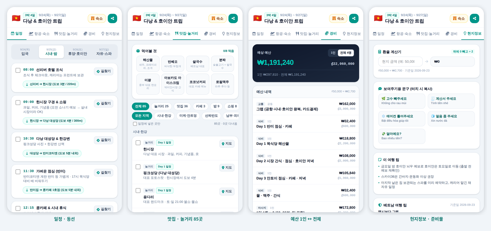

🧳
MD 한 장이면 여행 가이드 완성
일정과 구글맵 링크, 예산을 적으면 일정·지도·맛집·1인/전체 예산·경비 기록이 들어간 모바일 가이드 페이지가 만들어져요. 어느 나라든, 무료, 서버 없이.

1. 쓰기빈 틀을 채우거나, AI 프롬프트를 복사해 ChatGPT·Gemini·Claude에게 초안을 받아요.
2. 확인빌더가 틀린 줄을 알려주고, 폰 화면 그대로 미리보기를 보여줘요.
3. 공유HTML 파일 하나로 다운로드. 카톡으로 보내면 폰에서 바로 열려요.